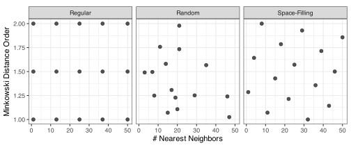
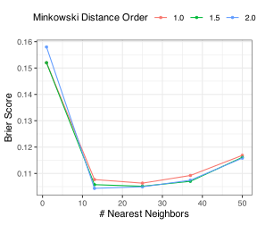
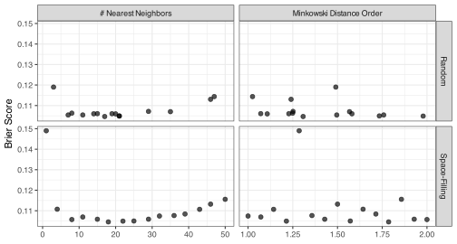

4 Optimization via Grid Search
Grid search is a method to optimize tuning parameters for models and/or their preprocessors. It creates a pre-defined set of candidate values and computes performance from each. From there, the numerically best candidate could be chosen, or the relationship between the tuning parameters and model performance can be inspected to see if additional optimization might benefit the model.
Suppose there is a single tuning parameter, as in the learning rate example of ?sec-grid-and-sequential, each candidate takes a scalar value (quantitative or qualitative). In other cases, there are multiple tuning parameters, such as the K-nearest neighbors example shown below. In this case, a candidate is multi-dimensional.
The previous chapter demonstrated that using external data to evaluate the model is crucial (be it resampling or a validation set). Grid search has no free lunch: we cannot simply fit the model and evaluate it by predicting the same data.
(alg-grid-search?) illustrates the process. For a model with \(m\) tuning parameters, we let \(\Theta\) represent the collection of \(s\) candidate values. For each specific value (\(\theta_j\)), we resample the model to produce some measure of efficacy (e.g., \(R^2\), accuracy, etc.)1. From there, the best value is chosen, or additional work is carried out to find a suitable candidate.
\begin{algorithm} \caption{Grid search for tuning parameter optimization that loops over the resampling algorithm shown in TODO.} \begin{algorithmic} \State $D$: training set \State $B$: number of resamples \State $f()$: modeling function \State $\Theta$: Parameter set ($s \times m$) with candidates $\theta_j$ \For{$j=1$ \To $m$} \State Generate $\bar{Q}_{j} =$ \Call{Resample}{$D, B, f(\cdot; \theta_j)$} corresponding to candidate $\theta_j$. \EndFor \State Determine $\hat{\theta}_{opt}$ that optimizes $\bar{Q}_{j}$. \end{algorithmic} \end{algorithm}
To demonstrate, this chapter will initially focus on grids for a K-nearest neighbors (KNN) model with two tuning parameters2:
- The number of neighbors (from 1 to 50 neighbors).
- The Minkowski distance order (values ranging from 1.0 to 2.0).
We’ll illustrate different strategies using this model setup with varying configurations of these three tuning parameters.
There are two main classes of grids: regular and irregular. We can view generating a collection of candidate models as a statistical design of experiments (DOE) problem (Box, Hunter, and Hunter 1978). There is a long history of DOE, and we’ll invoke relevant methods for each grid type. Santner, Williams, and Notz (2018) and Gramacy (2020) have excellent overviews of the DOE methods discussed in this chapter.
The following two sections describe different methods for creating the candidate set \(\Theta\). Subsequent sections describe strategies for making grid search efficient using tools such as parallel processing and model racing.
4.1 Regular grids
A regular grid starts with a sequence or set of values for each tuning parameter and then creates all combinations. In statistics, this is referred to as a factorial design. The number of values per tuning parameter does not have to be the same. To illustrate a regular grid, we’ll use four values of the number of neighbors, all three weight functions, and two values of the distance order. This grid of 15 candidates is shown in Figure 4.1. Each weight function occurs at the same values as the other two parameter values. The grid covers the entire space with significant gaps in between.
Figure 4.2 plots the results when tuning the simulated training set in ?sec-complexity-overfitting with five repeats of 10-fold cross-validation. Brier scores were used to measure how well the model succeeded at predicting the data. The plot shows that using a small number of nearest neighbors is terrible (due to overfitting), the Minkowski distance parameter matters little for these data, and the inverse distance function performs better than rectangular. Even though this is not a diverse set of candidate values, we can probably pick out a reasonable candidate with a small Brier score, such as 13 neighbors and and a Minkowski distance order of 2.0.
The nice thing about regular grids is that you can learn much from the tuning results. It is possible for tuning parameters to interact with one another (in the same manner as predictors in ?sec-interactions). This can usually be seen when visualizing the results of a regular grid. In our KNN example, the three profiles have roughly the same relationship with the performance metric. This indicates that the impact of these parameters is additive. Understanding how a model’s tuning parameters affect performance can help improve model optimization.

The primary downside to regular grids is that, as the number of tuning parameters increases, the number of points required to fill the space becomes extremely large (due to the curve of dimensionality). However, for some models and pre-processing methods, regular grids can be very efficient despite the number of tuning parameters (see the following section that describes the “submodel trick”).
4.2 Irregular grids
Irregular grids are not factorial in nature. A simple example is a random grid where points are randomly placed using a uniform distribution. A design of size 15 is shown in Figure 4.1. There are some gaps and clustering of the points, but the space is covered well. The tuning results are shown in the top panel of Figure 4.3. Because it is an irregular design, we can’t use the same visualization as in Figure 4.2. Instead, a “marginal” plot is shown, where each numeric tuning parameter is plotted against performance in a separate panel. Here, it is clear that using few neighbors is terrible and that the Minkowski distance parameter has little effect on the results. It is more challenging to see that there is a slight but reliable difference in the weighting function. The numerically best candidate was not too dissimilar from the regular grid: 17 neighbors and and a Minkowski distance order of 1.3.

For this example, the patterns for the number of neighbors do not change across values of the Minkowski distance parameter (i.e., there is no interaction). If this were not the case, the relationship between these parameters and performance would be much more difficult to understand. Examples of this will be seen in later chapters, such as in TODO and TODO.
Another type of irregular grid is a space-filling design (Joseph 2016), where the goal is to make sure that the tuning parameter space is covered and that there is minimal redundancy in the candidate values. There are a variety of methods for achieving this goal.
The Latin hypercube design (LHD) is the most popular method for constructing space-filling designs (Husslage et al. 2011; Viana 2016). These designs have a simple definition. If our hyperparameter space is rectangular and partitioned into smaller (hyper)cubes, a LHD is a set of distinct points. For our application, and most others, this definition is inadequate3. We desire candidates that fill the space and are not close to one another.
The most basic approach to creating a LHD is using random sampling (Mckay, Beckman, and Conover 2000). If there are \(m\) parameters and we request \(s\) candidate values, the parameter space is initially divided into \(s^m\) hypercubes of equal size. For each tuning parameter, a random value is created for each of the \(s\) bins in that dimension. Suppose there are five bins for a parameter that ranges between zero and one. We randomly order the bins and then create a random number in the bin range. If the first design point selects bin two, a random uniform value is created in the range [0.2 0.4). This process continues for each parameter. Figure 4.4 shows three such designs, each generated with different random numbers.

While the points do not overlap, each design covers the parameter space poorly. Additional constraints can be used to make the design more consistent with our desires.
For example, we could choose points to maximize the minimum pairwise distances between the candidates. These designs are usually referred to as MaxiMin designs (Pronzato 2017). Comparing the two irregular designs in Figure 4.1, the random grid has a maximum minimum distance value of 0.08. In contrast, the corresponding space-filling design’s value (0.25) is 3.1-fold larger4. The latter design was optimized for this criterion, and we can see far less redundancy in the optimized design.
A similar method, initially proposed by Audze and Eglais (1977), maximizes a function of the inverse distances between \(s\) candidate points:
\[ criterion = \sum_{i=1}^s \sum_{j=1,\;i\ne j}^s\frac{1}{dist(\theta_i, \theta_j)^2} \] Bates, Sienz, and Toropov (2004) devised search methods to find optimal designs for this criterion.
Additionally, maximum entropy sampling selects points based on assumptions related to the distributions of the tuning parameters and their covariance matrix (Shewry and Wynn 1987; Joseph, Gul, and Ba 2015).
While these methods can be constructed generally by sampling random points and using a search method to optimize a specific criterion, there has been scholarship that has pre-optimized designs for some combination of the number of tuning parameters and the requested grid size.
The lower panel of Figure 4.3 shows the tuning results for the Audze-Eglais design. The results are somewhat cleaner than the random grid results but would lead to the same conclusions. Here, the best candidate was nearly identical to the random grid: 18 neighbors and and a Minkowski distance order of 1.8.
The advantage of space-filling designs over random designs is that, for smaller designs, the candidates do a better job covering the space and have a low probability of producing redundant points. Also, it is possible to create a space-filling design so that the candidates for each numerical parameter are nearly equally spaced (as was done in Figure 4.1).
So far, the Latin hypercube design math assumes that all of the tuning parameter values are quantitative in nature. That’s not the case in our example. There are only two values of the weighting function. As a simple workaround, these two parameter values are repeated as if they were \(s\) distinct values when making the design. This allows them to be used with a Latin hypercube design and any space-filling design that uses this approach is not technically optimal. Practically speaking, this is an effective approach for tuning models. However, there are sliced LHD that can accomplish the same goal (Qian 2012; Ba, Myers, and Brenneman 2015).
- The distance weighting function (qualitative with values “rectangular” and “inverse”).
We recommend space-filling designs since they are more efficient than regular designs. Regular designs have a lot of benefits when using an unfamiliar modeling methodology since you will learn a lot more about the nuances of how the tuning parameters affect one another.
4.3 Efficient Computations for Grid Search
The computational cost of grid search can become large, depending on the resampling strategy and the number of candidates under consideration. In our example, a total of 750 KNN models are evaluated before determining which candidates are most favorable to our data.
Fortunately, none of these 750 models depend on one another and can be computed separately. Since almost all modern computers have multiple CPUs and GPUs, we can break the computations into different “chunks” of work and execute them simultaneously on other processors (or separate computers entirely). The parallel processing of models can significantly reduce the time it takes to tune using grid search.
when does this become more effective?
Despite the meager computation costs of tuning the KNN model, there was still a 5.3-fold speedup (11.9s versus 2.3s) when using 10 parallel workers. There are some nuances related to parallel processing. It is an excellent idea to parallelize the “longest loop” (literally or figuratively).
- Parallel individual model fits or resampling.
- data preprocessing conditional computations
- keep data on one core or shotgun approach See Kuhn and Silge (2022) Section 13.5.2
TODO move all timing computations to a separate file for batch processing
Also, some models can exploit the “submodel trick,” where a single training model can predict many tuning parameter candidates. For example, the glmnet model (?sec-penalized-logistic-regression) can compute the model coefficients for all penalty values. If we tune the penalty value, a single model fit can evaluate numerous candidate values (assuming all other tuning parameters are the same). For a regular grid, this can effectively drop a dimension of the computations. Some different models and pre-processors can have this quality, including boosted trees (?sec-boosting-cls), partial least squares (?sec-colinear-projections), principal component feature extraction (?sec-linear-feature-extraction), and others.
Unfortunately, irregular designs cannot exploit the submodel trick mentioned in the previous section.
4.4 Grid Search via Racing
Summed up in (alg-race?).
\begin{algorithm} \caption{Racing tuning parameter optimization} \begin{algorithmic} \State $D$: training set \State $B$: number of resamples \State Define initial number of resamples $1 \lt B_{min} \lt B$ \State $f()$: modeling function \State $\Theta$: Parameter set ($s \times m$) with candidates $\theta_j$ \For{$j=1$ \To $m$} \State Generate $\bar{Q}_{j} =$ \Call{Resample}{$D, B_{min}, f(\cdot; \theta_j)$} corresponding to candidate $\theta_j$. \EndFor \State Eliminate candidates so that only $s_i$ remain. \For{$k = B_{min} + 1$ \To $B$} \State Generate $\bar{Q}_j^k =$ \Call{Resample}{$D, k, f(\cdot; \theta_j)$} corresponding to candidate $\theta_j$ as of resample $k$. \State Eliminate candidates so that only $s_k$ remain. \Endfor \State Determine $\hat{\theta}_{opt}$ that optimizes $\bar{Q}_j^k$. \end{algorithmic} \end{algorithm}
4.5 Optimization Bias and Nested Resampling
Chapter References
Audze, P, and V Eglais. 1977. “New Approach to Planning Out of Experiments.” Problems of Dynamics and Strengths 35: 104–7.
Ba, S, R Myers, and W Brenneman. 2015. “Optimal Sliced Latin Hypercube Designs.” Technometrics 57 (4): 479–87.
Bates, S, J Sienz, and V Toropov. 2004. “Formulation of the Optimal Latin Hypercube Design of Experiments Using a Permutation Genetic Algorithm.” In 45th AIAA/ASME/ASCE/AHS/ASC Structures, Structural Dynamics & Materials Conference, 2011.
Box, GEP, W Hunter, and J. Hunter. 1978. Statistics for Experimenters. New York: Wiley.
Gramacy, R. 2020. Surrogates: Gaussian Process Modeling, Design, and Optimization for the Applied Sciences. CRC press.
Husslage, B, G Rennen, E Van Dam, and D Den Hertog. 2011. “Space-Filling Latin Hypercube Designs for Computer Experiments.” Optimization and Engineering 12: 611–30.
Joseph, V. 2016. “Space-Filling Designs for Computer Experiments: A Review.” Quality Engineering 28 (1): 28–35.
Joseph, V, E Gul, and S Ba. 2015. “Maximum Projection Designs for Computer Experiments.” Biometrika 102 (2): 371–80.
Kuhn, M, and J Silge. 2022. Tidy Modeling with R. O’Reilly Media, Inc.
Mckay, M, R Beckman, and W Conover. 2000. “A Comparison of Three Methods for Selecting Values of Input Variables in the Analysis of Output from a Computer Code.” Technometrics 42 (1): 55–61.
Pronzato, L. 2017. “Minimax and Maximin Space-Filling Designs: Some Properties and Methods for Construction.” Journal de La Société Française de Statistique 158 (1): 7–36.
Qian, P. 2012. “Sliced Latin Hypercube Designs.” Journal of the American Statistical Association 107 (497): 393–99.
Santner, T, B Williams, and W Notz. 2018. The Design and Analysis of Computer Experiments. Springer.
Shewry, M, and H Wynn. 1987. “Maximum Entropy Sampling.” Journal of Applied Statistics 14 (2): 165–70.
Viana, F. 2016. “A Tutorial on Latin Hypercube Design of Experiments.” Quality and Reliability Engineering International 32 (5): 1975–85.